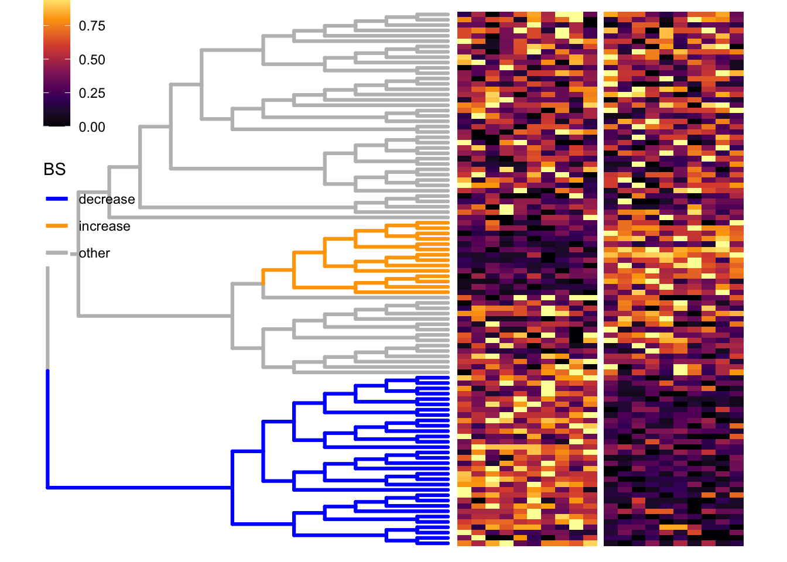
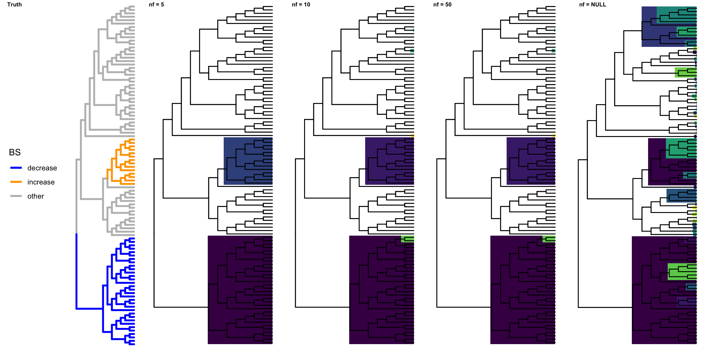
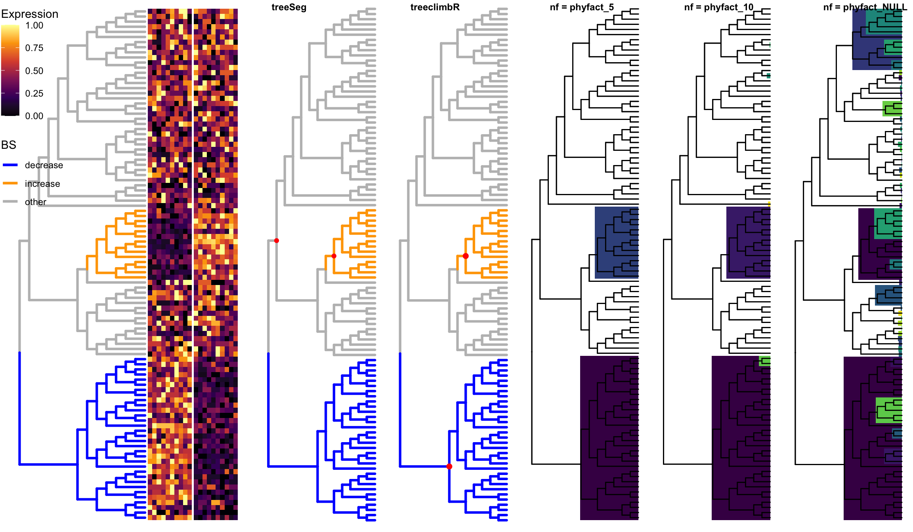

Last updated: 2020-06-12
Checks: 5 2
Knit directory: benchmark_treebased/
This reproducible R Markdown analysis was created with workflowr (version 1.5.0). The Checks tab describes the reproducibility checks that were applied when the results were created. The Past versions tab lists the development history.
The R Markdown is untracked by Git. To know which version of the R Markdown file created these results, you’ll want to first commit it to the Git repo. If you’re still working on the analysis, you can ignore this warning. When you’re finished, you can run wflow_publish to commit the R Markdown file and build the HTML.
Great job! The global environment was empty. Objects defined in the global environment can affect the analysis in your R Markdown file in unknown ways. For reproduciblity it’s best to always run the code in an empty environment.
The command set.seed(20200610) was run prior to running the code in the R Markdown file. Setting a seed ensures that any results that rely on randomness, e.g. subsampling or permutations, are reproducible.
Great job! Recording the operating system, R version, and package versions is critical for reproducibility.
To ensure reproducibility of the results, delete the cache directory BS_2_cache and re-run the analysis. To have workflowr automatically delete the cache directory prior to building the file, set delete_cache = TRUE when running wflow_build() or wflow_publish().
Great job! Using relative paths to the files within your workflowr project makes it easier to run your code on other machines.
Great! You are using Git for version control. Tracking code development and connecting the code version to the results is critical for reproducibility. The version displayed above was the version of the Git repository at the time these results were generated.
Note that you need to be careful to ensure that all relevant files for the analysis have been committed to Git prior to generating the results (you can use wflow_publish or wflow_git_commit). workflowr only checks the R Markdown file, but you know if there are other scripts or data files that it depends on. Below is the status of the Git repository when the results were generated:
Ignored files:
Ignored: .Rhistory
Ignored: .Rproj.user/
Ignored: analysis/BS_2_cache/
Ignored: analysis/BS_cache/
Ignored: analysis/SS_cache/
Untracked files:
Untracked: analysis/1-phylofactor.Rmd
Untracked: analysis/2_phylofactor.Rmd
Untracked: analysis/3_phylofactor.Rmd
Untracked: analysis/4_phylofactor.Rmd
Untracked: analysis/BS_2.Rmd
Untracked: analysis/SS.Rmd
Untracked: analysis/toy_phylofactor.Rmd
Untracked: code/viewSim.R
Untracked: output/viewSim.R
Unstaged changes:
Deleted: analysis/SS_phylofactor.Rmd
Modified: analysis/phylofactor.Rmd
Note that any generated files, e.g. HTML, png, CSS, etc., are not included in this status report because it is ok for generated content to have uncommitted changes.
There are no past versions. Publish this analysis with wflow_publish() to start tracking its development.
suppressPackageStartupMessages({
library(ggplot2)
library(gganimate)
library(ggtree)
library(dplyr)
library(treeclimbR)
library(ape)
library(TreeHeatmap)
library(ggnewscale)
library(cowplot)
library(phylofactor)
library(treeSeg)
})We simulate a scenario (BS) that only two branches on the tree have differential abundance (signal) between groups. The data is simulated by swapping proportions of two branches, and leaves in the same branch have the same fold change.
# generate a random tree
set.seed(1)
n <- 100
tree <- rtree(n)
# generate a random probility vector for leaves
p <- rbeta(n = n, shape1 = 2, shape2 = 5)
p <- p/sum(p)
names(p) <- tree$tip.label
# # simulate counts by sampling from multinomial distribution
lse <- simMult(pr = p, libSize = 1000, tree = tree,
minTip.A = 10, maxTip.A = 20,
ratio = 2, scenario = "BS",
nSam = c(10, 10))DA branches are colored in orange or blue. Simulated counts are scaled and displayed in the heatmap
# signal branches
br <- metadata(lse)$branch
source("code/viewSim.R")
treeFig <- viewSim(lse, branch.length = "none",
zoom_scale = 1, size = 1.1)
# scale counts
count <- assays(lse)[[1]]
rownames(count) <- rowLinks(lse)$nodeLab
scale_count <- t(apply(count, 1, FUN = function(x) {
xx <- scale(x)
(xx - min(xx))/(max(xx)-min(xx))
}))
rownames(scale_count) <- rownames(count)
colnames(scale_count) <- colnames(count)
# fig: tree + heatmap
vv <- gsub(pattern = "_.*", "", colnames(count))
names(vv) <- colnames(scale_count)
fig <- TreeHeatmap(tree = tree, tree_fig = treeFig,
hm_data = scale_count,
column_split = vv, rel_width = 0.7,
tree_hm_gap = 0.3) +
scale_fill_viridis_c(option = "B") +
theme(legend.position = c(0.1, 0.8))Scale for 'fill' is already present. Adding another scale for 'fill', which
will replace the existing scale.fig
PhyloFactorsite <- colData(lse)$groupDifferent number of factors are used.
pf_5 <- PhyloFactor(count, tree, site, nfactors= 5)Warning in PhyloFactor(count, tree, site, nfactors = 5): Data has zeros and will
receive default modification of zeros. Zeros will be replaced column wise with
delta*min(x[x>0]), default delta=0.65
1 factor completed in 0.0234 minutes. Estimated time of completion: 2020-06-12 11:12:46
2 factors completed in 0.0469 minutes. Estimated time of completion: 2020-06-12 11:12:46
3 factors completed in 0.07 minutes. Estimated time of completion: 2020-06-12 11:12:46
4 factors completed in 0.0923 minutes. Estimated time of completion: 2020-06-12 11:12:46
5 factors completed in 0.114 minutes. Estimated time of completion: 2020-06-12 11:12:46 f_5 <- pf.tree(pf_5, tree = tree, layout='rectangular',
branch.length = "none",
ignore.tips = FALSE)$ggplotWarning: Ignoring unknown parameters: branch.lengthWarning: Ignoring unknown parameters: branch.lengthpf_10 <- PhyloFactor(count, tree, site, nfactors= 10)Warning in PhyloFactor(count, tree, site, nfactors = 10): Data has zeros and
will receive default modification of zeros. Zeros will be replaced column wise
with delta*min(x[x>0]), default delta=0.65
1 factor completed in 0.0235 minutes. Estimated time of completion: 2020-06-12 11:13:01
2 factors completed in 0.0483 minutes. Estimated time of completion: 2020-06-12 11:13:01
3 factors completed in 0.0707 minutes. Estimated time of completion: 2020-06-12 11:13:01
4 factors completed in 0.0924 minutes. Estimated time of completion: 2020-06-12 11:13:01
5 factors completed in 0.114 minutes. Estimated time of completion: 2020-06-12 11:13:01
6 factors completed in 0.136 minutes. Estimated time of completion: 2020-06-12 11:13:00
7 factors completed in 0.159 minutes. Estimated time of completion: 2020-06-12 11:13:01
8 factors completed in 0.181 minutes. Estimated time of completion: 2020-06-12 11:13:00
9 factors completed in 0.202 minutes. Estimated time of completion: 2020-06-12 11:13:00
10 factors completed in 0.226 minutes. Estimated time of completion: 2020-06-12 11:13:00 f_10 <- pf.tree(pf_10, tree = tree,layout='rectangular',
branch.length = "none",
ignore.tips = FALSE)$ggplotWarning: Ignoring unknown parameters: branch.length
Warning: Ignoring unknown parameters: branch.lengthpf_50 <- PhyloFactor(count, tree, site, nfactors= 50)Warning in PhyloFactor(count, tree, site, nfactors = 50): Data has zeros and
will receive default modification of zeros. Zeros will be replaced column wise
with delta*min(x[x>0]), default delta=0.65
1 factor completed in 0.0288 minutes. Estimated time of completion: 2020-06-12 11:14:28
2 factors completed in 0.0542 minutes. Estimated time of completion: 2020-06-12 11:14:22
3 factors completed in 0.08 minutes. Estimated time of completion: 2020-06-12 11:14:21
4 factors completed in 0.107 minutes. Estimated time of completion: 2020-06-12 11:14:21
5 factors completed in 0.13 minutes. Estimated time of completion: 2020-06-12 11:14:19
6 factors completed in 0.153 minutes. Estimated time of completion: 2020-06-12 11:14:17
7 factors completed in 0.175 minutes. Estimated time of completion: 2020-06-12 11:14:16
8 factors completed in 0.198 minutes. Estimated time of completion: 2020-06-12 11:14:15
9 factors completed in 0.219 minutes. Estimated time of completion: 2020-06-12 11:14:14
10 factors completed in 0.241 minutes. Estimated time of completion: 2020-06-12 11:14:13
11 factors completed in 0.263 minutes. Estimated time of completion: 2020-06-12 11:14:13
12 factors completed in 0.285 minutes. Estimated time of completion: 2020-06-12 11:14:12
13 factors completed in 0.305 minutes. Estimated time of completion: 2020-06-12 11:14:12
14 factors completed in 0.327 minutes. Estimated time of completion: 2020-06-12 11:14:11
15 factors completed in 0.347 minutes. Estimated time of completion: 2020-06-12 11:14:11
16 factors completed in 0.368 minutes. Estimated time of completion: 2020-06-12 11:14:10
17 factors completed in 0.388 minutes. Estimated time of completion: 2020-06-12 11:14:09
18 factors completed in 0.408 minutes. Estimated time of completion: 2020-06-12 11:14:09
19 factors completed in 0.428 minutes. Estimated time of completion: 2020-06-12 11:14:09
20 factors completed in 0.448 minutes. Estimated time of completion: 2020-06-12 11:14:08
21 factors completed in 0.47 minutes. Estimated time of completion: 2020-06-12 11:14:08
22 factors completed in 0.49 minutes. Estimated time of completion: 2020-06-12 11:14:08
23 factors completed in 0.509 minutes. Estimated time of completion: 2020-06-12 11:14:07
24 factors completed in 0.528 minutes. Estimated time of completion: 2020-06-12 11:14:07
25 factors completed in 0.548 minutes. Estimated time of completion: 2020-06-12 11:14:07
26 factors completed in 0.567 minutes. Estimated time of completion: 2020-06-12 11:14:06
27 factors completed in 0.586 minutes. Estimated time of completion: 2020-06-12 11:14:06
28 factors completed in 0.605 minutes. Estimated time of completion: 2020-06-12 11:14:06
29 factors completed in 0.625 minutes. Estimated time of completion: 2020-06-12 11:14:06
30 factors completed in 0.644 minutes. Estimated time of completion: 2020-06-12 11:14:05
31 factors completed in 0.662 minutes. Estimated time of completion: 2020-06-12 11:14:05
32 factors completed in 0.68 minutes. Estimated time of completion: 2020-06-12 11:14:05
33 factors completed in 0.698 minutes. Estimated time of completion: 2020-06-12 11:14:05
34 factors completed in 0.715 minutes. Estimated time of completion: 2020-06-12 11:14:04
35 factors completed in 0.733 minutes. Estimated time of completion: 2020-06-12 11:14:04
36 factors completed in 0.75 minutes. Estimated time of completion: 2020-06-12 11:14:04
37 factors completed in 0.768 minutes. Estimated time of completion: 2020-06-12 11:14:03
38 factors completed in 0.785 minutes. Estimated time of completion: 2020-06-12 11:14:03
39 factors completed in 0.802 minutes. Estimated time of completion: 2020-06-12 11:14:03
40 factors completed in 0.82 minutes. Estimated time of completion: 2020-06-12 11:14:03
41 factors completed in 0.837 minutes. Estimated time of completion: 2020-06-12 11:14:02
42 factors completed in 0.853 minutes. Estimated time of completion: 2020-06-12 11:14:02
43 factors completed in 0.87 minutes. Estimated time of completion: 2020-06-12 11:14:02
44 factors completed in 0.886 minutes. Estimated time of completion: 2020-06-12 11:14:01
45 factors completed in 0.902 minutes. Estimated time of completion: 2020-06-12 11:14:01
46 factors completed in 0.918 minutes. Estimated time of completion: 2020-06-12 11:14:01
47 factors completed in 0.934 minutes. Estimated time of completion: 2020-06-12 11:14:01
48 factors completed in 0.95 minutes. Estimated time of completion: 2020-06-12 11:14:00
49 factors completed in 0.966 minutes. Estimated time of completion: 2020-06-12 11:14:00
50 factors completed in 0.981 minutes. Estimated time of completion: 2020-06-12 11:14:00 f_50 <- pf.tree(pf_10, tree = tree,layout='rectangular',
branch.length = "none",
ignore.tips = FALSE)$ggplotWarning: Ignoring unknown parameters: branch.length
Warning: Ignoring unknown parameters: branch.lengthpf_NULL <- PhyloFactor(count, tree, site, nfactors= NULL)Warning in PhyloFactor(count, tree, site, nfactors = NULL): Data has zeros and
will receive default modification of zeros. Zeros will be replaced column wise
with delta*min(x[x>0]), default delta=0.65
1 factor completed in 0.0229 minutes. Estimated time of completion: at latest 2020-06-12 11:16:18
2 factors completed in 0.0452 minutes. Estimated time of completion: at latest 2020-06-12 11:16:16
3 factors completed in 0.0674 minutes. Estimated time of completion: at latest 2020-06-12 11:16:15
4 factors completed in 0.0907 minutes. Estimated time of completion: at latest 2020-06-12 11:16:17
5 factors completed in 0.113 minutes. Estimated time of completion: at latest 2020-06-12 11:16:16
6 factors completed in 0.135 minutes. Estimated time of completion: at latest 2020-06-12 11:16:16
7 factors completed in 0.159 minutes. Estimated time of completion: at latest 2020-06-12 11:16:17
8 factors completed in 0.181 minutes. Estimated time of completion: at latest 2020-06-12 11:16:16
9 factors completed in 0.203 minutes. Estimated time of completion: at latest 2020-06-12 11:16:16
10 factors completed in 0.226 minutes. Estimated time of completion: at latest 2020-06-12 11:16:16
11 factors completed in 0.25 minutes. Estimated time of completion: at latest 2020-06-12 11:16:17
12 factors completed in 0.272 minutes. Estimated time of completion: at latest 2020-06-12 11:16:17
13 factors completed in 0.295 minutes. Estimated time of completion: at latest 2020-06-12 11:16:17
14 factors completed in 0.319 minutes. Estimated time of completion: at latest 2020-06-12 11:16:18
15 factors completed in 0.342 minutes. Estimated time of completion: at latest 2020-06-12 11:16:18
16 factors completed in 0.366 minutes. Estimated time of completion: at latest 2020-06-12 11:16:18
17 factors completed in 0.388 minutes. Estimated time of completion: at latest 2020-06-12 11:16:18
18 factors completed in 0.409 minutes. Estimated time of completion: at latest 2020-06-12 11:16:17
19 factors completed in 0.43 minutes. Estimated time of completion: at latest 2020-06-12 11:16:16
20 factors completed in 0.451 minutes. Estimated time of completion: at latest 2020-06-12 11:16:16
21 factors completed in 0.471 minutes. Estimated time of completion: at latest 2020-06-12 11:16:15
22 factors completed in 0.491 minutes. Estimated time of completion: at latest 2020-06-12 11:16:14
23 factors completed in 0.51 minutes. Estimated time of completion: at latest 2020-06-12 11:16:14
24 factors completed in 0.531 minutes. Estimated time of completion: at latest 2020-06-12 11:16:13
25 factors completed in 0.551 minutes. Estimated time of completion: at latest 2020-06-12 11:16:13
26 factors completed in 0.572 minutes. Estimated time of completion: at latest 2020-06-12 11:16:13
27 factors completed in 0.592 minutes. Estimated time of completion: at latest 2020-06-12 11:16:12
28 factors completed in 0.61 minutes. Estimated time of completion: at latest 2020-06-12 11:16:11
29 factors completed in 0.629 minutes. Estimated time of completion: at latest 2020-06-12 11:16:11
30 factors completed in 0.647 minutes. Estimated time of completion: at latest 2020-06-12 11:16:10
31 factors completed in 0.665 minutes. Estimated time of completion: at latest 2020-06-12 11:16:09
32 factors completed in 0.685 minutes. Estimated time of completion: at latest 2020-06-12 11:16:09
33 factors completed in 0.705 minutes. Estimated time of completion: at latest 2020-06-12 11:16:09
34 factors completed in 0.724 minutes. Estimated time of completion: at latest 2020-06-12 11:16:08
35 factors completed in 0.741 minutes. Estimated time of completion: at latest 2020-06-12 11:16:08
36 factors completed in 0.759 minutes. Estimated time of completion: at latest 2020-06-12 11:16:07
37 factors completed in 0.776 minutes. Estimated time of completion: at latest 2020-06-12 11:16:07
38 factors completed in 0.794 minutes. Estimated time of completion: at latest 2020-06-12 11:16:06
39 factors completed in 0.811 minutes. Estimated time of completion: at latest 2020-06-12 11:16:05
40 factors completed in 0.829 minutes. Estimated time of completion: at latest 2020-06-12 11:16:05
41 factors completed in 0.847 minutes. Estimated time of completion: at latest 2020-06-12 11:16:05
42 factors completed in 0.864 minutes. Estimated time of completion: at latest 2020-06-12 11:16:04
43 factors completed in 0.88 minutes. Estimated time of completion: at latest 2020-06-12 11:16:03
44 factors completed in 0.897 minutes. Estimated time of completion: at latest 2020-06-12 11:16:03
45 factors completed in 0.912 minutes. Estimated time of completion: at latest 2020-06-12 11:16:02
46 factors completed in 0.929 minutes. Estimated time of completion: at latest 2020-06-12 11:16:02
47 factors completed in 0.944 minutes. Estimated time of completion: at latest 2020-06-12 11:16:01
48 factors completed in 0.96 minutes. Estimated time of completion: at latest 2020-06-12 11:16:01
49 factors completed in 0.976 minutes. Estimated time of completion: at latest 2020-06-12 11:16:00
50 factors completed in 0.992 minutes. Estimated time of completion: at latest 2020-06-12 11:16:00
51 factors completed in 1.01 minutes. Estimated time of completion: at latest 2020-06-12 11:15:59
52 factors completed in 1.02 minutes. Estimated time of completion: at latest 2020-06-12 11:15:59
53 factors completed in 1.04 minutes. Estimated time of completion: at latest 2020-06-12 11:15:58
54 factors completed in 1.05 minutes. Estimated time of completion: at latest 2020-06-12 11:15:58
55 factors completed in 1.07 minutes. Estimated time of completion: at latest 2020-06-12 11:15:57
56 factors completed in 1.08 minutes. Estimated time of completion: at latest 2020-06-12 11:15:57
57 factors completed in 1.1 minutes. Estimated time of completion: at latest 2020-06-12 11:15:56
58 factors completed in 1.11 minutes. Estimated time of completion: at latest 2020-06-12 11:15:56
59 factors completed in 1.13 minutes. Estimated time of completion: at latest 2020-06-12 11:15:55
60 factors completed in 1.14 minutes. Estimated time of completion: at latest 2020-06-12 11:15:55
61 factors completed in 1.15 minutes. Estimated time of completion: at latest 2020-06-12 11:15:54
62 factors completed in 1.17 minutes. Estimated time of completion: at latest 2020-06-12 11:15:54
63 factors completed in 1.18 minutes. Estimated time of completion: at latest 2020-06-12 11:15:53
64 factors completed in 1.2 minutes. Estimated time of completion: at latest 2020-06-12 11:15:53
65 factors completed in 1.21 minutes. Estimated time of completion: at latest 2020-06-12 11:15:52
66 factors completed in 1.22 minutes. Estimated time of completion: at latest 2020-06-12 11:15:52
67 factors completed in 1.24 minutes. Estimated time of completion: at latest 2020-06-12 11:15:51
68 factors completed in 1.25 minutes. Estimated time of completion: at latest 2020-06-12 11:15:51
69 factors completed in 1.26 minutes. Estimated time of completion: at latest 2020-06-12 11:15:51
70 factors completed in 1.28 minutes. Estimated time of completion: at latest 2020-06-12 11:15:50
71 factors completed in 1.29 minutes. Estimated time of completion: at latest 2020-06-12 11:15:50
72 factors completed in 1.3 minutes. Estimated time of completion: at latest 2020-06-12 11:15:49
73 factors completed in 1.31 minutes. Estimated time of completion: at latest 2020-06-12 11:15:49
74 factors completed in 1.33 minutes. Estimated time of completion: at latest 2020-06-12 11:15:48
75 factors completed in 1.34 minutes. Estimated time of completion: at latest 2020-06-12 11:15:48
76 factors completed in 1.35 minutes. Estimated time of completion: at latest 2020-06-12 11:15:47
77 factors completed in 1.36 minutes. Estimated time of completion: at latest 2020-06-12 11:15:47
78 factors completed in 1.37 minutes. Estimated time of completion: at latest 2020-06-12 11:15:46
79 factors completed in 1.38 minutes. Estimated time of completion: at latest 2020-06-12 11:15:46
80 factors completed in 1.4 minutes. Estimated time of completion: at latest 2020-06-12 11:15:45
81 factors completed in 1.41 minutes. Estimated time of completion: at latest 2020-06-12 11:15:45
82 factors completed in 1.42 minutes. Estimated time of completion: at latest 2020-06-12 11:15:44
83 factors completed in 1.43 minutes. Estimated time of completion: at latest 2020-06-12 11:15:44
84 factors completed in 1.44 minutes. Estimated time of completion: at latest 2020-06-12 11:15:43
85 factors completed in 1.45 minutes. Estimated time of completion: at latest 2020-06-12 11:15:43
86 factors completed in 1.46 minutes. Estimated time of completion: at latest 2020-06-12 11:15:42
87 factors completed in 1.47 minutes. Estimated time of completion: at latest 2020-06-12 11:15:42
88 factors completed in 1.48 minutes. Estimated time of completion: at latest 2020-06-12 11:15:41
89 factors completed in 1.49 minutes. Estimated time of completion: at latest 2020-06-12 11:15:41
90 factors completed in 1.5 minutes. Estimated time of completion: at latest 2020-06-12 11:15:41
91 factors completed in 1.51 minutes. Estimated time of completion: at latest 2020-06-12 11:15:40
92 factors completed in 1.52 minutes. Estimated time of completion: at latest 2020-06-12 11:15:40
93 factors completed in 1.53 minutes. Estimated time of completion: at latest 2020-06-12 11:15:39
94 factors completed in 1.54 minutes. Estimated time of completion: at latest 2020-06-12 11:15:39
95 factors completed in 1.54 minutes. Estimated time of completion: at latest 2020-06-12 11:15:38
96 factors completed in 1.55 minutes. Estimated time of completion: at latest 2020-06-12 11:15:38
97 factors completed in 1.56 minutes. Estimated time of completion: at latest 2020-06-12 11:15:37
98 factors completed in 1.57 minutes. Estimated time of completion: at latest 2020-06-12 11:15:37
99 factors completed in 1.58 minutes. Estimated time of completion: at latest 2020-06-12 11:15:36 f_NULL <- pf.tree(pf_NULL, tree = tree,layout='rectangular',
branch.length = "none",
ignore.tips = FALSE)$ggplotWarning: Ignoring unknown parameters: branch.length
Warning: Ignoring unknown parameters: branch.length# summary(pf_PhyloFactor,factor=1)
# pf_PhyloFactor$factors
Warning: The above code chunk cached its results, but it won’t be re-run if previous chunks it depends on are updated. If you need to use caching, it is highly recommended to also set knitr::opts_chunk$set(autodep = TRUE) at the top of the file (in a chunk that is not cached). Alternatively, you can customize the option dependson for each individual chunk that is cached. Using either autodep or dependson will remove this warning. See the knitr cache options for more details.
plot_grid(treeFig, f_5, f_10, f_50, f_NULL,
nrow = 1,
labels = c("Truth", "nf = 5", "nf = 10", "nf = 50", "nf = NULL"),
label_size = 7)
all_node <- showNode(tree = rowTree(lse), only.leaf = FALSE)
tse <- aggValue(x = lse, rowLevel = all_node)
colData(tse)DataFrame with 20 rows and 1 column
group
<factor>
C1_1 C1
C1_2 C1
C1_3 C1
C1_4 C1
C1_5 C1
... ...
C2_6 C2
C2_7 C2
C2_8 C2
C2_9 C2
C2_10 C2res <- runDA(TSE = tse, feature_on_row = TRUE,
filter_min_count = 0,
design_terms = "group", normalize = FALSE)
out <- nodeResult(object = res, n = Inf)
head(out) node logFC logCPM LR PValue FDR
alias_169 169 -1.0219271 17.91422 567.7462 1.736121e-125 3.454881e-123
alias_143 143 0.9945561 17.89784 533.4381 5.046304e-118 5.021072e-116
alias_142 142 0.9835648 17.90635 525.3996 2.830048e-116 1.877265e-114
alias_147 147 1.0117911 17.54911 433.9748 2.217115e-96 1.103015e-94
alias_179 179 -1.0178750 17.51768 429.5221 2.064944e-95 8.218478e-94
alias_141 141 0.6493113 18.52931 360.3001 2.422334e-80 8.034074e-79dim(out)[1] 199 6# treeclimbR
cand <- getCand(tree = rowTree(tse), score_data = out,
node_column = "node", p_column = "PValue",
sign_column = "logFC", message = TRUE)Searching candidates on t = 0 ...Searching candidates on t = 0.01 ...Searching candidates on t = 0.02 ...Searching candidates on t = 0.03 ...Searching candidates on t = 0.04 ...Searching candidates on t = 0.05 ...Searching candidates on t = 0.1 ...Searching candidates on t = 0.15 ...Searching candidates on t = 0.2 ...Searching candidates on t = 0.25 ...Searching candidates on t = 0.3 ...Searching candidates on t = 0.35 ...Searching candidates on t = 0.4 ...Searching candidates on t = 0.45 ...Searching candidates on t = 0.5 ...Searching candidates on t = 0.55 ...Searching candidates on t = 0.6 ...Searching candidates on t = 0.65 ...Searching candidates on t = 0.7 ...Searching candidates on t = 0.75 ...Searching candidates on t = 0.8 ...Searching candidates on t = 0.85 ...Searching candidates on t = 0.9 ...Searching candidates on t = 0.95 ...Searching candidates on t = 1 ...best <- evalCand(tree = rowTree(tse), levels = cand$candidate_list,
score_data = out, node_column = "node",
sign_column = "logFC",
p_column = "PValue")
infoCand(best) t upper_t is_valid method limit_rej level_name best rej_leaf rej_node
1 0.00 0.04137931 TRUE BH 0.05 0 FALSE 41 41
2 0.01 0.15333333 TRUE BH 0.05 0.01 FALSE 38 15
3 0.02 0.15333333 TRUE BH 0.05 0.02 FALSE 38 15
4 0.03 0.16000000 TRUE BH 0.05 0.03 FALSE 39 15
5 0.04 0.16000000 TRUE BH 0.05 0.04 FALSE 39 15
6 0.05 0.16000000 TRUE BH 0.05 0.05 FALSE 39 15
7 0.10 0.36666667 TRUE BH 0.05 0.1 FALSE 42 9
8 0.15 0.36666667 TRUE BH 0.05 0.15 FALSE 42 9
9 0.20 0.38888889 TRUE BH 0.05 0.2 FALSE 44 9
10 0.25 0.65000000 TRUE BH 0.05 0.25 FALSE 45 6
11 0.30 1.00000000 TRUE BH 0.05 0.3 TRUE 46 2
12 0.35 1.00000000 TRUE BH 0.05 0.35 TRUE 46 2
13 0.40 1.00000000 TRUE BH 0.05 0.4 TRUE 46 2
14 0.45 1.00000000 TRUE BH 0.05 0.45 TRUE 46 2
15 0.50 1.00000000 TRUE BH 0.05 0.5 TRUE 46 2
16 0.55 1.00000000 TRUE BH 0.05 0.55 TRUE 46 2
17 0.60 1.00000000 TRUE BH 0.05 0.6 TRUE 46 2
18 0.65 1.00000000 TRUE BH 0.05 0.65 TRUE 46 2
19 0.70 1.00000000 TRUE BH 0.05 0.7 TRUE 46 2
20 0.75 1.00000000 TRUE BH 0.05 0.75 TRUE 46 2
21 0.80 1.00000000 TRUE BH 0.05 0.8 TRUE 46 2
22 0.85 1.00000000 TRUE BH 0.05 0.85 TRUE 46 2
23 0.90 1.00000000 TRUE BH 0.05 0.9 TRUE 46 2
24 0.95 1.00000000 TRUE BH 0.05 0.95 TRUE 46 2
25 1.00 1.00000000 FALSE BH 0.05 1 FALSE 46 2# the detected nodes
loc <- best$output[best$output$signal.node, ][["node"]]
loc[1] 169 143fig_climb <- treeFig +
geom_point2(aes(subset = (node %in% loc)), color = "red", size = 2) +
theme(legend.position = "none")As treeSeg requires to specify the distribution of data, and accepts only gauss and binomial, we here transform P-value to Z-score to use gauss.
out_leaf <- out %>%
filter(node %in% 1:100) %>%
arrange(node)
# check order
all(out_leaf$node == 1:100)[1] TRUEpval <- out_leaf$PValue
tp <- 1-pval
# 10E-8 is to avoid Inf value in z that treeSeg doesn't accept
tp <- ifelse(tp == 0, 10E-8, ifelse(tp == 1, 1-10E-8, tp))
z <- qnorm(tp)
names(z) <- transNode(tree = tree, node = out_leaf$node)
ansGauss <- treeSeg(z, tree, alpha = 0.05, fam = "gauss")
ansGauss$mlAN[1] 102 143fig_seg <- treeFig +
geom_point2(aes(subset = node %in% ansGauss$mlAN),
color = "red")
Warning: The above code chunk cached its results, but it won’t be re-run if previous chunks it depends on are updated. If you need to use caching, it is highly recommended to also set knitr::opts_chunk$set(autodep = TRUE) at the top of the file (in a chunk that is not cached). Alternatively, you can customize the option dependson for each individual chunk that is cached. Using either autodep or dependson will remove this warning. See the knitr cache options for more details.
plot_grid(fig,
fig_seg + theme(legend.position = "none"),
fig_climb, f_5, f_10, f_NULL,
nrow = 1, rel_widths = c(0.28, rep(0.145, 5)),
labels = c("", "treeSeg", "treeclimbR", "nf = phyfact_5",
"nf = phyfact_10", "nf = phyfact_NULL"),
label_size = 9)
sessionInfo()R version 3.6.1 (2019-07-05)
Platform: x86_64-apple-darwin15.6.0 (64-bit)
Running under: macOS Mojave 10.14.4
Matrix products: default
BLAS: /Library/Frameworks/R.framework/Versions/3.6/Resources/lib/libRblas.0.dylib
LAPACK: /Library/Frameworks/R.framework/Versions/3.6/Resources/lib/libRlapack.dylib
locale:
[1] en_US.UTF-8/en_US.UTF-8/en_US.UTF-8/C/en_US.UTF-8/en_US.UTF-8
attached base packages:
[1] parallel stats4 stats graphics grDevices utils datasets
[8] methods base
other attached packages:
[1] treeSeg_0.1 stepR_2.0-4
[3] phylofactor_0.0.1 Matrix_1.2-17
[5] data.table_1.12.6 magrittr_1.5
[7] cowplot_1.0.0 ggnewscale_0.4.0
[9] TreeHeatmap_0.1.0 ape_5.3
[11] treeclimbR_0.1.1 TreeSummarizedExperiment_1.3.0
[13] SingleCellExperiment_1.8.0 SummarizedExperiment_1.16.0
[15] DelayedArray_0.12.0 BiocParallel_1.20.0
[17] matrixStats_0.55.0 Biobase_2.46.0
[19] GenomicRanges_1.38.0 GenomeInfoDb_1.22.0
[21] IRanges_2.20.0 S4Vectors_0.24.0
[23] BiocGenerics_0.32.0 dplyr_0.8.5
[25] ggtree_2.1.6 gganimate_1.0.4
[27] ggplot2_3.3.0
loaded via a namespace (and not attached):
[1] backports_1.1.6 circlize_0.4.8
[3] diffcyt_1.6.1 workflowr_1.5.0
[5] plyr_1.8.5 igraph_1.2.4.1
[7] ConsensusClusterPlus_1.50.0 lazyeval_0.2.2
[9] splines_3.6.1 flowCore_1.52.0
[11] fda_2.4.8 TH.data_1.0-10
[13] digest_0.6.25 htmltools_0.4.0
[15] viridis_0.5.1 fansi_0.4.1
[17] CytoML_1.12.0 cluster_2.1.0
[19] ks_1.11.6 limma_3.42.0
[21] ComplexHeatmap_2.2.0 RcppParallel_4.4.4
[23] R.utils_2.9.0 sandwich_2.5-1
[25] flowWorkspace_3.34.0 prettyunits_1.1.1
[27] colorspace_1.4-1 rrcov_1.4-7
[29] xfun_0.11 crayon_1.3.4
[31] RCurl_1.95-4.12 jsonlite_1.6.1
[33] hexbin_1.28.0 graph_1.64.0
[35] lme4_1.1-21 dirmult_0.1.3-4
[37] survival_2.44-1.1 zoo_1.8-6
[39] glue_1.4.0 flowClust_3.24.0
[41] gtable_0.3.0 zlibbioc_1.32.0
[43] XVector_0.26.0 GetoptLong_0.1.7
[45] ggcyto_1.14.0 IDPmisc_1.1.19
[47] Rgraphviz_2.30.0 shape_1.4.4
[49] DEoptimR_1.0-8 scales_1.1.0
[51] mvtnorm_1.0-11 edgeR_3.28.0
[53] Rcpp_1.0.4 viridisLite_0.3.0
[55] progress_1.2.2 clue_0.3-57
[57] tidytree_0.3.3.991 openCyto_1.24.0
[59] mclust_5.4.5 FlowSOM_1.18.0
[61] tsne_0.1-3 RColorBrewer_1.1-2
[63] ellipsis_0.3.0 pkgconfig_2.0.3
[65] XML_3.98-1.20 R.methodsS3_1.7.1
[67] farver_2.0.3 flowViz_1.50.0
[69] locfit_1.5-9.1 labeling_0.3
[71] reshape2_1.4.3 flowStats_3.44.0
[73] tidyselect_1.0.0 rlang_0.4.5
[75] later_1.0.0 munsell_0.5.0
[77] tools_3.6.1 cli_2.0.2
[79] gifski_0.8.6 evaluate_0.14
[81] stringr_1.4.0 yaml_2.2.0
[83] knitr_1.26 fs_1.3.1
[85] robustbase_0.93-5 purrr_0.3.3
[87] RBGL_1.62.1 nlme_3.1-142
[89] R.oo_1.23.0 aplot_0.0.4.991
[91] compiler_3.6.1 png_0.1-7
[93] treeio_1.11.3 tibble_3.0.0
[95] tweenr_1.0.1 pcaPP_1.9-73
[97] stringi_1.4.6 lattice_0.20-38
[99] nloptr_1.2.1 vctrs_0.2.4
[101] pillar_1.4.3 lifecycle_0.2.0
[103] BiocManager_1.30.10 GlobalOptions_0.1.1
[105] bitops_1.0-6 corpcor_1.6.9
[107] httpuv_1.5.2 patchwork_1.0.0
[109] R6_2.4.1 latticeExtra_0.6-28
[111] promises_1.1.0 KernSmooth_2.23-15
[113] gridExtra_2.3 codetools_0.2-16
[115] boot_1.3-23 MASS_7.3-51.4
[117] gtools_3.8.1 assertthat_0.2.1
[119] rprojroot_1.3-2 rjson_0.2.20
[121] withr_2.1.2 mnormt_1.5-5
[123] multcomp_1.4-10 GenomeInfoDbData_1.2.2
[125] hms_0.5.2 ncdfFlow_2.32.0
[127] grid_3.6.1 minqa_1.2.4
[129] tidyr_1.0.2 rmarkdown_1.17
[131] rvcheck_0.1.8 git2r_0.26.1
[133] base64enc_0.1-3 ellipse_0.4.1